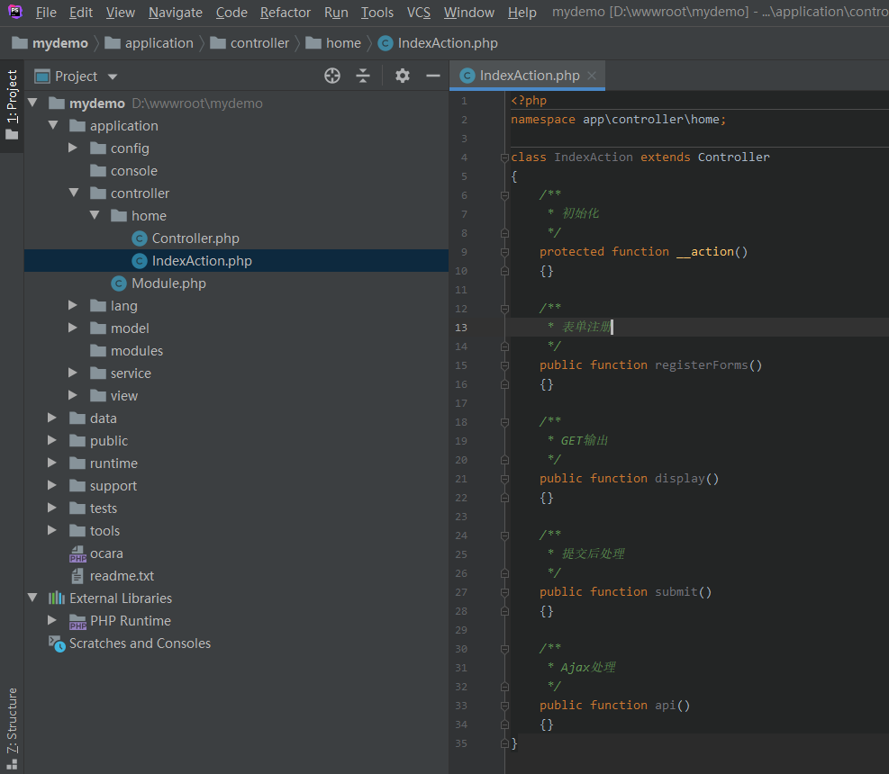
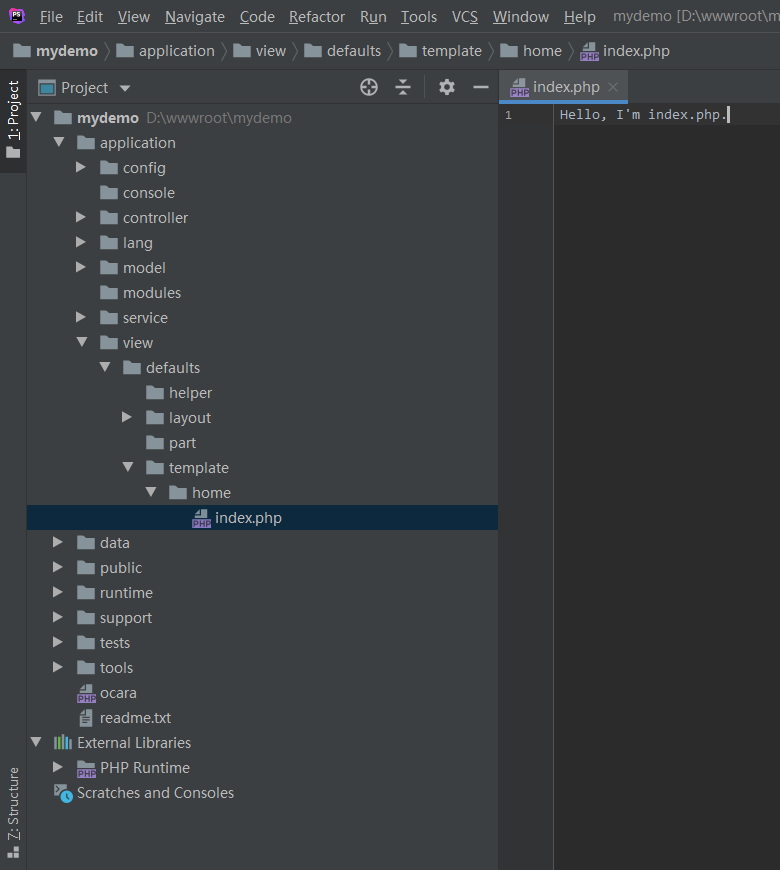
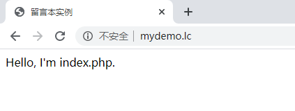
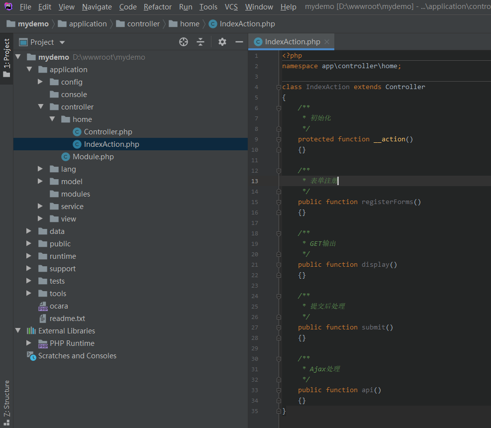
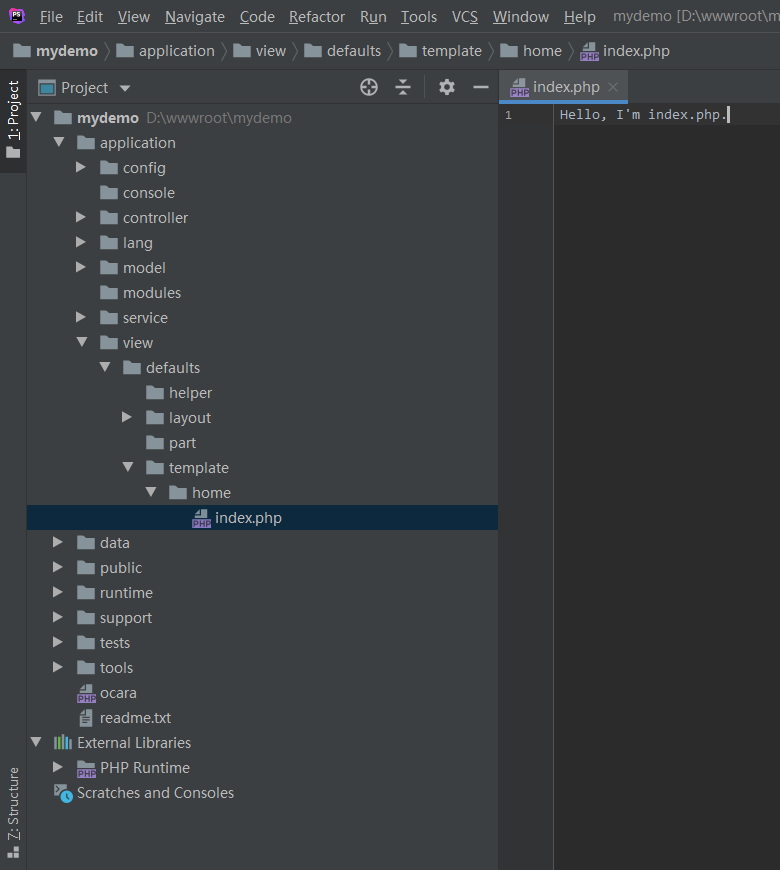
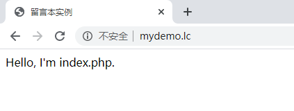
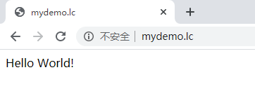

8.1.2 新建首页
1、新建首页控制器 （1）在浏览器输入http://localhost/pass/tools，进入开发者中心，登录的用户名和密码都是“root”。 （2）选择左边的控制器（Controller），在右边的区域，输入控制器名称home。 （3）点击提交。 可以看到生成的目录和文件。

2、新建action
新建了控制器，框架默认自动生成了一个index的动作，我们暂时就直接使用index。
它默认在生成了一个index.php模板。

可以在浏览器打开http://mydemo.lc，查看模板显示结果：

3、打印输出
上一点显示的内容是模板方式显示的。
我们还可以改成直接在php代码中进行显示，而不显示模板内容，使用send()方法。
可以看到生成的目录和文件。

2、新建action
新建了控制器，框架默认自动生成了一个index的动作，我们暂时就直接使用index。
它默认在生成了一个index.php模板。

可以在浏览器打开http://mydemo.lc，查看模板显示结果：

3、打印输出
上一点显示的内容是模板方式显示的。
我们还可以改成直接在php代码中进行显示，而不显示模板内容，使用send()方法。
class IndexAction extends HomeController
{
/**
* 初始化
*/
public function __action()
{
echo 'Hello World!';
}
}
再次在浏览器打开http://mydemo.lc，查看结果：
